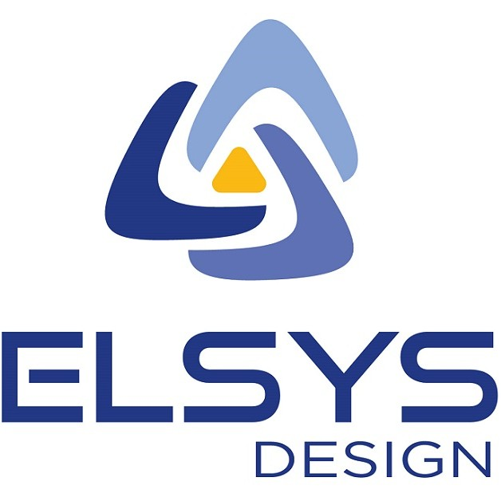
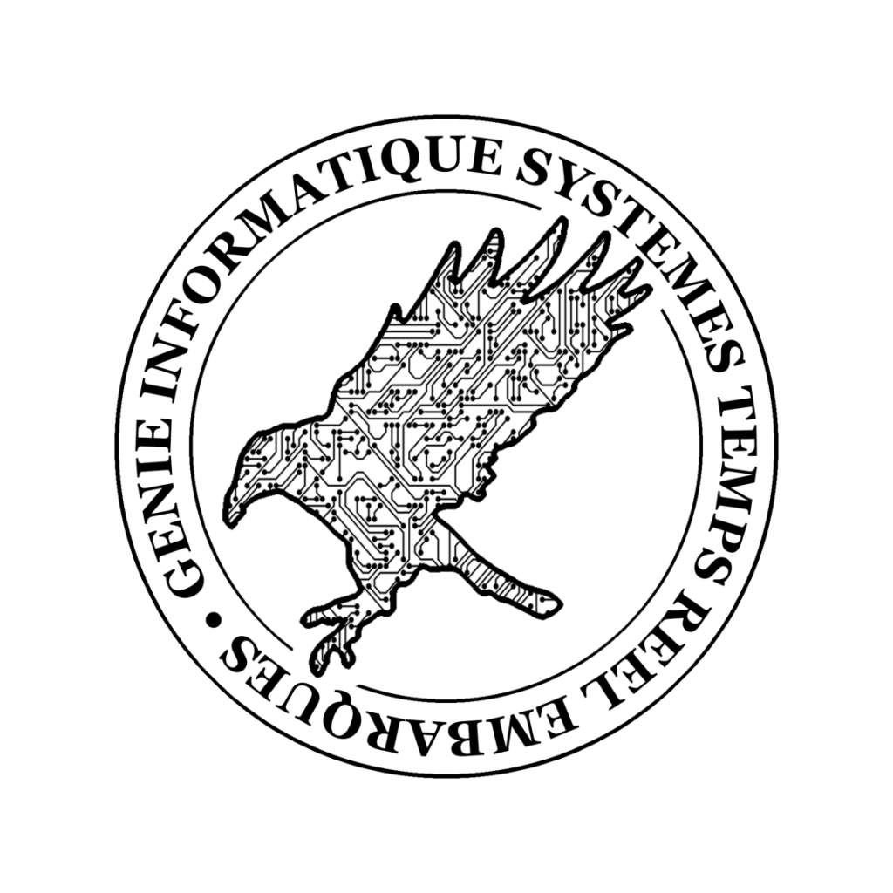
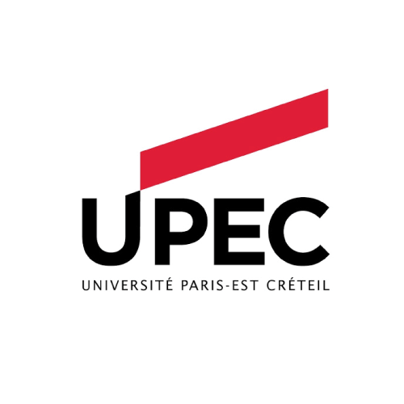
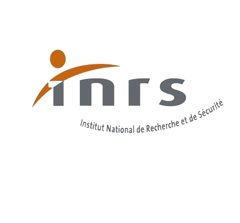
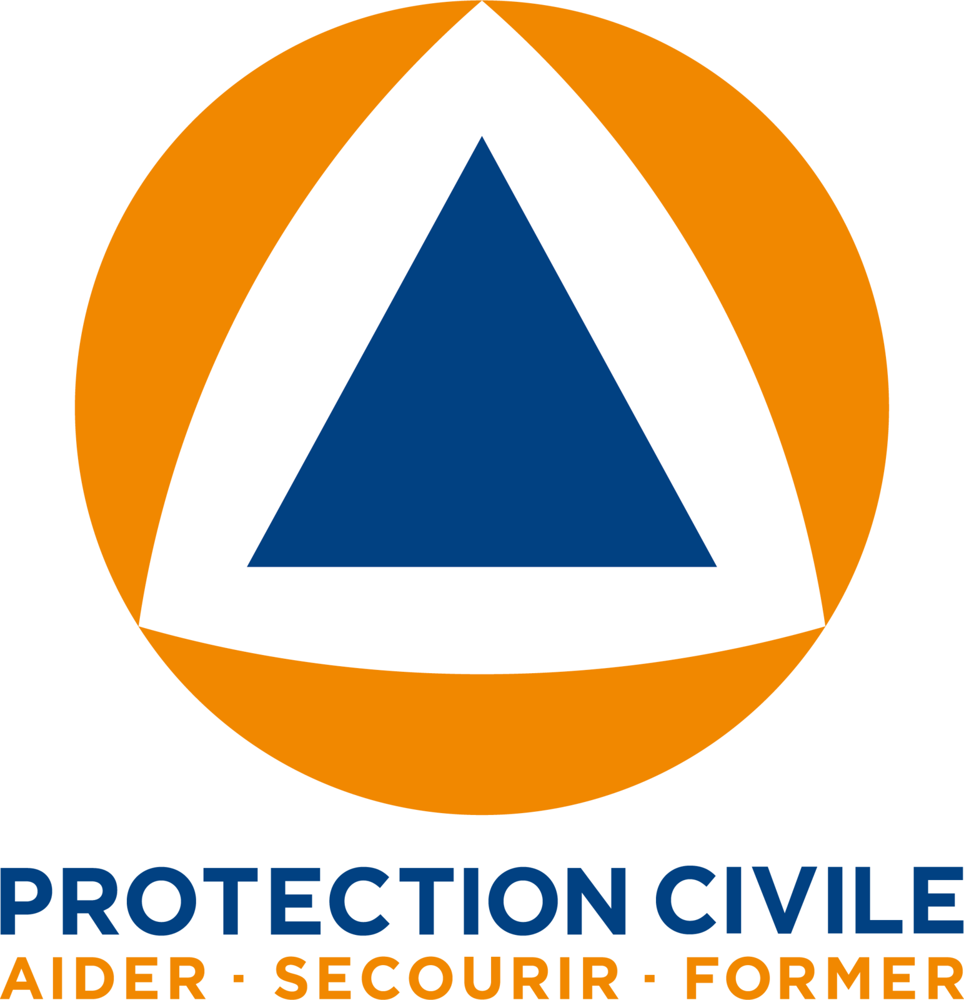

Statu quo
Rien de prévu… pour l'instant :/
Revenez bientôt — ou explorez les projets en cours en attendant.
Portfolio · 2016 → 2026
Dix ans d'expériences en un coup d'œil — survolez les visuels, ils réagissent. Choisissez une année pour y sauter.
Statu quo
Revenez bientôt — ou explorez les projets en cours en attendant.

Stage de fin d'études · Elsys Design
Exploration de l'architecture et de l'ISA RISC-V pour une application industrielle, à Sophia Antipolis.
elsys-design.comFormation · EPITA Kremlin-Bicêtre
Majeure GISTRE : systèmes, réseaux et embarqué. Dernière ligne droite.
En savoir plus
Vie étudiante · EPITA
Représentant de la majeure Systèmes auprès de l'administration — promo 2026.
Stage 4A · Asterios Technologies
Conception d'un language server du langage PsyC — groupe Safran Electronics & Defense.
Asterios Technologies
Formation · UPEC
Licence décrochée en parallèle de l'EPITA.

Formation · INRS
Formation SST suivie en ligne.
Formation · EPITA Kremlin-Bicêtre
Cap sur le diplôme d'ingénieur — promo 2026.
En savoir plus
Secourisme · Protection Civile
Formation aux gestes de premiers secours citoyens.
En savoir plusJob d'été · Restauration rapide
Mai – juillet 2023, restaurant Pipact.
En savoir plusInternational · Dublin, Irlande
S4 à l'étranger, spécialité développement web.
En savoir plusJob d'été · Restauration rapide
Juin – août 2022, restaurant Pipact.
En savoir plusFormation · EPITA Villejuif
Premiers pas en école d'ingénieur — promo 2026.
En savoir plusJob d'été · Restauration rapide
Juin – août 2021, restaurant Charles de Gaulle.
En savoir plusLangue · Anglais
Niveau indépendant validé par l'examen officiel.
En savoir plusConduite · Permis B
Apprentissage anticipé de la conduite, permis en poche.
Langue · Chinois
Troisième palier du test officiel de mandarin.
En savoir plusStage d'observation · Paragon ID
Découverte de la production de cartes électroniques et magnétiques, à Argent-sur-Sauldre.
En savoir plusVoyage · Londres & Cambridge
Séjour linguistique au Royaume-Uni.
En savoir plusVoyage · Rome & Pompéi
L'Italie antique grandeur nature.
En savoir plusVoyage · Pékin & Xi'an 中国
Invité par le gouvernement chinois pour le camp d'automne 2018 秋令营.
En savoir plusScolarité · Lycée Ste Marie, Bourges
Direction la Seconde à Sainte-Marie.
En savoir plusStage d'observation · ON/OFF PC
Réparation de systèmes informatiques à Sancoins — la première étincelle.
En savoir plusChapitre premier · Ma vie
Passions, moteurs, débuts — tout commence ici.
En savoir plus